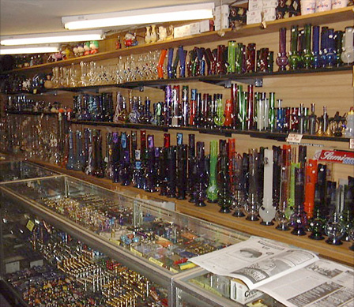
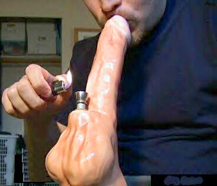
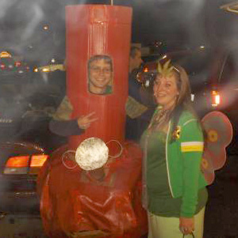
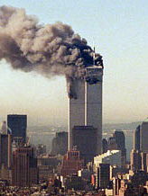
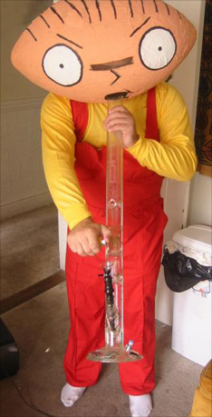
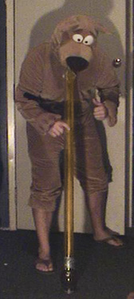
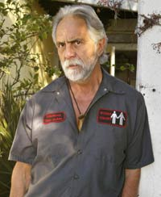
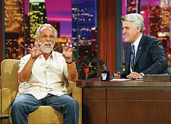
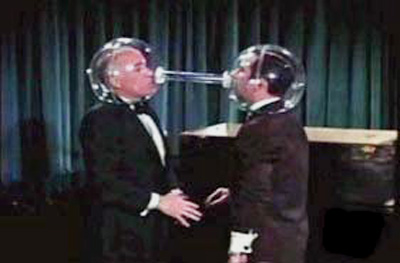

|
 BongsShhh! Jesus Christ dude, they're called water pipes and they're used for smoking tobacco or other legal herbal blends. Can't you read the sign? If the clerk hears us making any references to bongs, drugs, marijuana, or unlawful substances -- we'll both get thrown out! Just keep your mouth shut and follow my lead. Water pipe shops are commonly referred to as head shops by the tie-dye hippie types over forty who still lurk among us in sleepy towns like Portland, Oregon and Davenport, California. The term "head shop" communicates the idea of a store selling things which are "good for one's head" -- the term being a 1960s generational corruption of the word "pothead". Outside of a head shop, water pipes are indeed called bongs, so nicknamed after the Thai word baung: a snapped-off section of hollow bamboo which doubles as a you-know-what. Just gaze upwards over yonder counter top and look at all the funny bongs. So many styles and varieties! Why would you ever need one with multiple chambers? Hey, that one looks like the Starship Enterprise! Which one is right for you? They're not all glass, of course. Some are plastic. Others are wooden, or painted ceramic with a light glaze of enamel. There are two distinct types of bong designs: those crafted after Grateful Dead hippie shit, invoking imagery of skulls, the pot leaf, or dancing bears -- and everything else. What's important is that you understand what a bong is specifically designed for: it cools the smoke before it hits your lungs, enabling you to efficiently consume larger buffers of your product while minimizing the peer group humiliation which comes from coughing loudly, choking, and being a complete loser. The critics agree: smoking [legal tobacco products and herbal blends] out of a glass bong provides a smoother, richer smoking experience. Bongs constructed from ceramic or plastic run the risk of scratching, burning, melting ever so slightly, or emitting fumes which can lead to asthma or respiratory-related illnesses.
The bong maker (psst: they prefer to be called glass blowers) extracts and gathers this droplet onto a hollow rod, where it can be shaped, extruded, sculpted and beveled with a propane torch. With gentle clockwise and counterclockwise rotations, the rod is spun back and forth, occasionally angled with deliberate tilts up and down so the "blob" assumes the rough shape of a cylinder. This technique is the same for glass pipes as it is for bongs -- and different metal instruments resembling those found in a blacksmith's shop can be used to add decoration or enhance detail while the glass is further trained. Hollow rods also double as a blowpipes: air is forced through the tube (by the artisan's lungs or a set of accordion billows) so the molten glass can expand in size and shape like a balloon. Watching a bong evolve from a glowing, amber tadpole is a magical process. Look, there's the water chamber! There's the stem! I see where the carb is gonna be! He's sprinkling scraps of plastic in the glass so when the final design melts together it'll all be infused with multicolored rivers and swirls! Dude, I totally remember Shrinky Dinks. If the bong starts cooling more quickly than it can be sculpted, the artisan stashes what he's got right in the glory hole, a side compartment of the blasting window located just above the furnace, traditionally kept around 2000 degrees Fahrenheit. There, the glass loosens up into the viscosity of rubber, suitable for additional shaping. I'll say it again: long, hard tubes of glass get shoved in the glory hole and they're not pulled out until they're soft and floppy. The yins and yangs of bong making are simple and straightforward. Air is forcefully blown into a bong during its construction; air is forcefully sucked out of a bong throughout its life span. An empty bong needs to be filled, a filled bong needs to be emptied. Supercooled bong glass has no solidifying temperature: it continues to undergo a gradual change of shape and size over the course of many thousands of years. This means that whether you're super stoned or only a tiny bit stoned, your favorite glass bong really is melting in slow motion as it sits there on your desk next to your dusty keyboard and Pepperidge Farm Mint Milanos. Bong appetit! In September of 2001, terrorists converted New York's Trade Center towers into the world's largest bongs. Acres of smoke and debris billowed out the stacks for miles, higher and higher into the atmosphere. Unfortunately, nobody got stoned except Attorney General John Ashcroft, who promptly spearheaded America's very first anti-bong division, Operation Pipe Dreams, as part of Homeland Security's efforts to investigate and track the commerce of suspected terrorism. You might say he green lighted the notion that bong peddlers should be demonized as much as individuals who dare traffic in porno movies. Both groups are now subject to the same sudden raids, surprise searches, and summary seizures. Bada bing, bada bong. "Quite simply, the illegal drug paraphernalia industry has invaded the homes of families across the country without their knowledge," Ashcroft said at a press conference. "This illegal, billion-dollar industry will no longer be ignored by law enforcement." Paraphernalia. What a crazy, stoned-up Dr. Seuss word! More than just bongs are under the microscope: Operation Pipe Dreams of course takes aim against pipes as well -- not to mention screens, bowls, rolling papers, nitrous oxide canisters, whippets, measurement scales and balances, blenders, pill crushers, empty plastic baggies, razor blades, rubber bands, dilutents, solvents and adulterants like baking soda. Even clothespin roach clips are par for the course, so named because pot holder was already taken. All objects observed sitting directly adjacent to your bong can be considered "paraphernalia," so maybe your cat should sleep somewhere else. One bong, two bong, three bong, floor. As governmental databases and marketing firms continue aggregating their combined knowledge of American citizenry and their purchasing histories, life will grow increasingly difficult for the consumers of bongs. It's no longer hard to envision modern scenarios where individual applicants are denied health insurance for their families until they can satisfactorily explain away that peculiar 1998 debit card purchase of $120.00 made at Stoners Pot Palace in Seattle, Washington. Buying bongs over the Internet offers less anonymity than you might expect, which quite frankly is flagrant false advertising. In 2003, comedy legend Tommy Chong (formerly of Cheech & Chong) was sentenced to nine months in prison for selling Middle Eastern-inspired glass bongs on the Internet. There was a modest array to choose from -- none too over the top -- with models like Babe, Big Bamboo, Topanga, and yes, even one called the Cheech. The sting operation involved exactly the level creativity one might expect from the federal government: law enforcement officers placed orders for bongs from two of Chong's businesses, Chong Glass and Nice Dreams Enterprises. They paid for the bongs, then raided Chong's home once the merchandise was delivered. If the bongs had been fashioned to resemble animated characters from Pixar's Finding Nemo instead of Egyptian or Arab designs, Chong might have remained outside the radar of personnel working at the highest levels of the Bush administration. Later, Tommy would talk to Playboy magazine: "I heard a bang on the door at 5:30 a.m. When I opened it, DEA agents in flak jackets rushed in with their weapons drawn. They went from room to room yelling clear, clear, clear!" To streamline Chong's incarceration, prosecutors spoke less about his bong company -- and more about his long history of portraying characters who glamorized drug use in the movies. No genuinely remarkable efforts were made to distinguish Chong from his satirical movie roles or comedy writing efforts; he was presented as someone who regularly trivialized efforts to curtail drug proliferation. Chong's greatest crime was manufacturing decades' worth of pot-related humor in which cops were seen to be bumbling or inept. When it became clear that prosecutors were actually serious about Chong's bongs, the 64-year-old comedian pled guilty to violating federal paraphernalia laws in an effort to protect his son, whose own water pipe business was next on the authorities' chopping block. Perhaps John Ashcroft and his flak jacket squad might be interested in kicking down the doors of the Smithsonian Institute, which has a permanent bong exhibit. Admission is free. Prior to the bust, Tommy Chong never had anything resembling a criminal record -- just six comedy records which each went gold, and seven feature films. Of the fifty-five individuals swept up in the Pipe Dream bust, he was the only one jailed and the only individual ordered to pay fines of $20,000. Chong was sentenced on September 11, 2003 -- and placed in a minimum-security prison in Northern California. Lacking even a single prior arrest was something he found slightly embarrassing among his prison pals. When asked what he was in for, Chong would clear his throat and mumble bongs. "My time in jail wasn't bad," Chong says in the 2006 documentary a/k/a Tommy Chong. "For the most part, I was with my fans. They even had to come up with some kind of rule where guards weren't allowed to talk to me or ask for my autograph. It was like a rest home. When you get as old as I am, you don't need to get stoned to be slow and stupid." Welps, that's the much ado about bongs and bong-related whatnot. Hopefully me and my friend here have proved that we're one hundred percent over the age of eighteen and therefore legally able to purchase a water pipe. And so, kind sir, we'll take that twelve-chamber, inverted pyrex water hookah, one Bubbles Powerpuff Pipe, and these d'ope-smoking Homer bongs. Here's a credit card with the name of someone who appears to be a woman, but who is actually my mom because we both have the same name. Also I'm gonna need some metal screens, a pack of rolling papers, and this bag of peanut M&M's. And could you please point us in the general direction of where we might be able to score a little p-o-t. |
 Unless a bong was clearly assembled from uniform, prefabricated parts like
Pyrex beakers or rubber cork stoppers, chances are it was lovingly crafted by
hand. Today's
most sought-after
manufacturers are professional artisans or students of chemistry,
physics, and material engineering. A bong starts its life as a tiny droplet
of molten glass -- colored or clear -- pulled from a crucible furnace which
approaches 2800 degrees Fahrenheit. The key ingredients in bong glass are red-hot
silica sand, lime (calcium hydroxide), sodium bicarbonate, and recyclable
shards of other glass. A single droplet has the viscosity of
Unless a bong was clearly assembled from uniform, prefabricated parts like
Pyrex beakers or rubber cork stoppers, chances are it was lovingly crafted by
hand. Today's
most sought-after
manufacturers are professional artisans or students of chemistry,
physics, and material engineering. A bong starts its life as a tiny droplet
of molten glass -- colored or clear -- pulled from a crucible furnace which
approaches 2800 degrees Fahrenheit. The key ingredients in bong glass are red-hot
silica sand, lime (calcium hydroxide), sodium bicarbonate, and recyclable
shards of other glass. A single droplet has the viscosity of